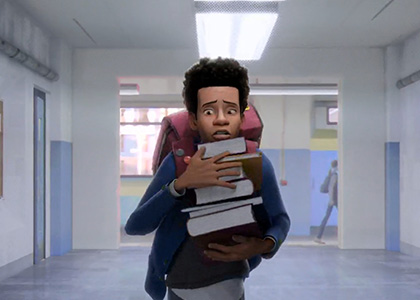
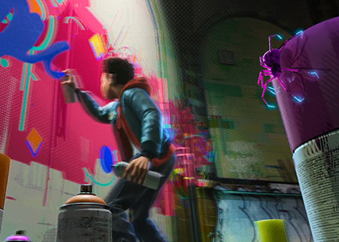
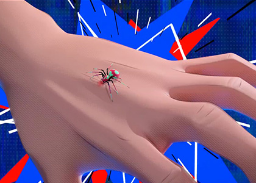
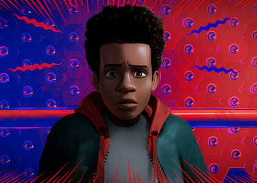
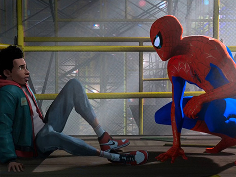
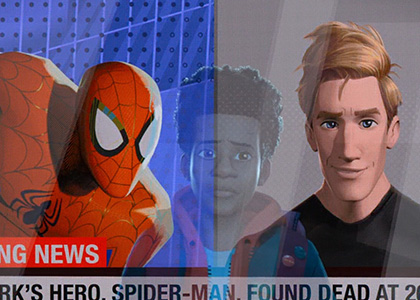
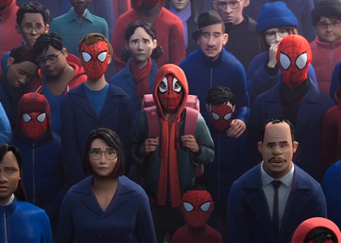

SPOILER
ALERT!!
ALERT!!
Synopsis!
Miles Morales, an ordinary teenager, accidentally gets bitten by a radioactive spider and has Spider-Man ability.Confused "Miles" encounters "Peter Parker," who is fighting a villain, and "Peter Parker" intuitions that "Miles" has the same ability as him. Miles and Peter Parker, who learned that there are several parallel worlds, will later meet all Spider-Man, including Spider-Woman Spider-Gwen, Spider-Man Noir, and Spider-Ham, who coexist in the parallel world… Will Spider-Man, who met at one universe and formed a team, be able to save the world?
#plot 1
- 
- 
- 
- 
Miles Morales, a teenager who admires Spider-Man, struggles living up to the expectations of his parents, especially his father, police officer Jefferson Davis, who sees Spider-Man as a menace. After school, Miles secretly visits his uncle Aaron Davis, who brings Miles to an abandoned subway station where he can paint graffiti. While there, Miles is unknowingly bitten by a radioactive spider and, the next day, discovers it gave him spider-like abilities, including the power to turn invisible, and to emit electric venom blasts.
#plot 2
Searching for the spider, Miles returns to the station and unintentionally discovers a particle accelerator built by Wilson Fisk, who wishes to access parallel universes to find alternative versions of his wife and son who died in a car crash. Spider-Man tries to disable it while fighting Fisk's enforcers, Green Goblin and Prowler. Spider-Man is gravely wounded by an explosion during the battle which kills Green Goblin. Spider-Man gives Miles, whom he previously found, a USB drive to disable the accelerator and warns that the machine could destroy the city if turned on again. Miles then watches in horror as Fisk kills Spider-Man. Prowler spots Miles and pursues him throughout the subway, with Miles narrowly escaping. The news of Spider-Man's death then spreads all over the city.
- 
- 
- 
If you want to know more?
Check it out in the movie!
Check it out in the movie!